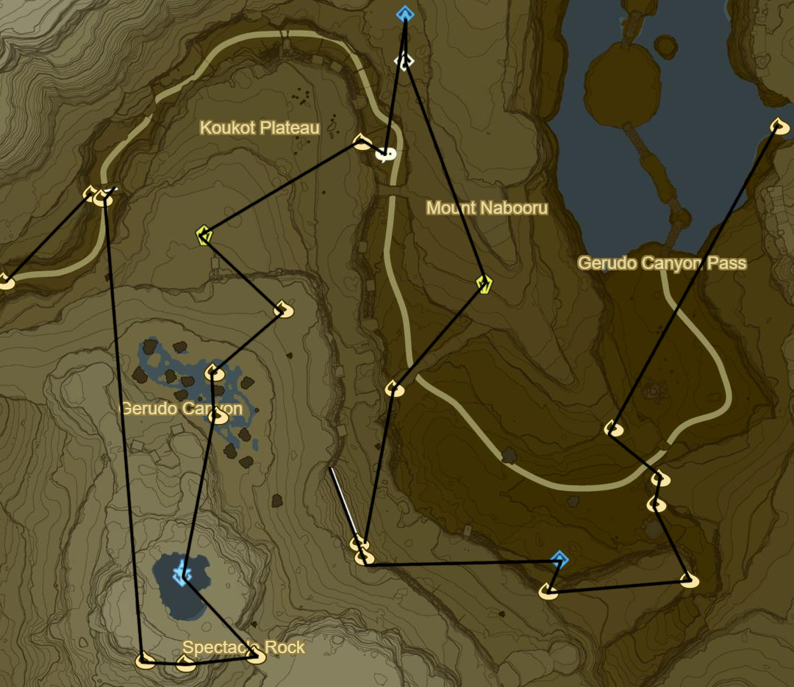
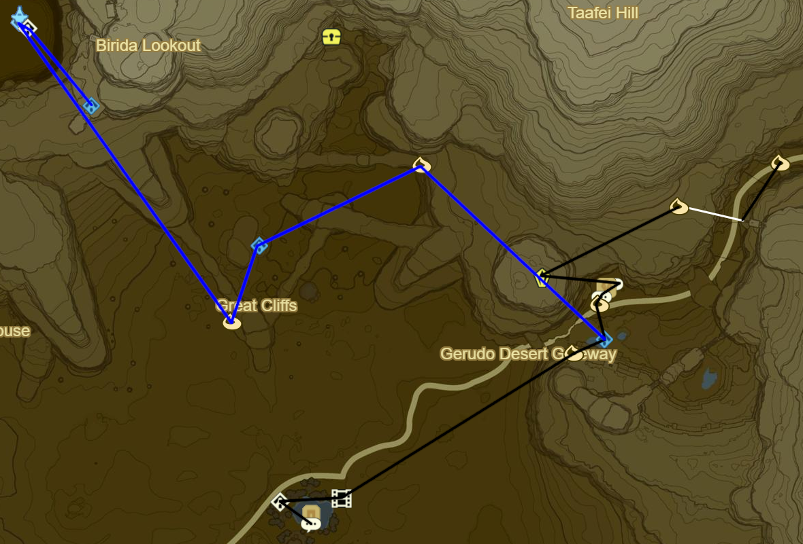
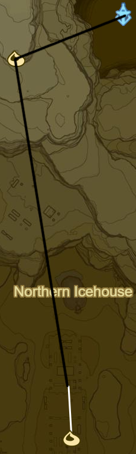
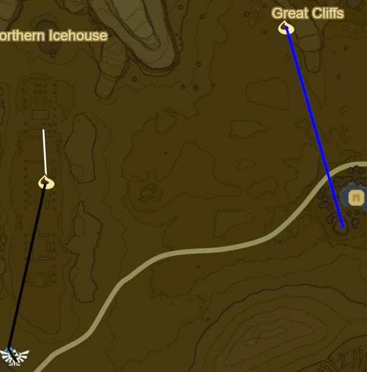
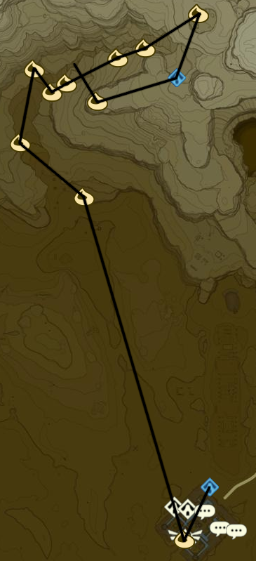

Wasteland 1

Korok 504: Magnesis ball to SW
Korok 505: Fairylights atop tree to SE
Korok 506: Magnesis Puzzle to S
Korok 507: Pinwheel shooting to SE
Korok 508: Magnesis Puzzle to W
Jee Noh Shrine to N (78/120)
Korok 509: Race to W
Korok 510: Rock on scaffolding to S
Korok 511: Rock atop arch to NE
Stone Talus (Luminous) to NE (23/40)
Shrine Quest: Test of Will to NW
Joloo Nah Shrine (79/120)
If stuck use Fire Elixirs from Goron City
Side Quest: Good-Sized Horse to SW
Korok 512: Magnesis Puzzle to W
Stone Talus (Luminous) to SW (24/40)
Korok 513: Rock atop tree to SE
Korok 514: Hanging acorn to SW
Korok 515: Roll boulder to S
Wasteland Tower to S
Korok 516: Balloon beneath bridge to SE
Korok 517: Magnesis Puzzle to W
Korok 518: Rock on high ledge to W
Korok 519: Fairylights in rock bridge cleft to N, NW of Talus
Korok 520: Race to NE
Korok 521: Balloon within rock bridge to SW

Korok 522: Race to S
Stone Talus (Luminous) to SW (25/40)
Gerudo Canyon Stable to E
Side Quest: Rushroom Rush!
55 Rushrooms
Side Quest: Missing in Action
Korok 523: Rock atop pillar S of stable
Kay Noh Shrine to S (80/120)
Korok 524: Rock atop cliff to SW
Recovered Memory 7 - Blades of the Yiga at Kara Kara Bazaar to SW (8/12)
Shrine Quest: The Eye of the Sandstorm
Side Quest: An Ice Guy
Make Chilly Elixir
Monster part
Winterwing Butterfly/Cold Darner
Side Quest: From the Ground up
Talk to Rhondson
Warp back to Tarrey Town
30 Wood Bundles
Warp to Akh Va'quot Shrine
Speak to Fyson
Complete Side Quest: Face the Frost Talus
Complete Side Quest: Curry for What Ails You
Warp back to Tarrey Town
50 Wood Bundles
Side Quest: Hobbies of the Rich
Hunt Guardians to W
Warp to Ne'ez Yohma Shrine
Speak to Kapson
Warp back to Tarrey Town
Complete Side Quest: Hobbies of the Rich
Side Quest: A Parent's Love
Eavesdrop Southernmost House at Night
Monster Cake
Monster Extract
Tabantha Wheat
Goat Butter
Cane Sugar
Warp to Myahm Agana Shrine
Talk to Bolson
Warp back to Tarrey Town
Enjoy :]
Warp back to Kay Noh Shrine
Korok 525: Magnesis Puzzle to NW
Dako Tah Shrine in Sandstorm to SW (81/120)
Shrine Quest: The Eye of the Sandstorm
Korok 526: Magnesis Puzzle to SW
Drop Traveller's Medallion for later
Gerudo Tower to NW
Shrine Quest: Sign of the Shadow
3PM
Sasa Kai Shrine to SE (82/120)
Warp back to Gerudo Tower

Korok 527: Pinhweel shooting to W
Korok 528: Race to S

Daqo Chisay Shrine to S outside Gerudo Town (83/120)
Main Quest: Forbidden City Entrance
Return to Kara Kara Bazaar and buy Gerudo Disguise
600 Rupees
Return to Gerudo Town
Main Quest: Forbidden City Entry

Shrine Quest: The Silent Swordswomen
Shrine Quest: The Seven Heroines
Side Quest: Tools of the Trade
10 Flint
Sapphire is most Cost Effective Reward
Side Quest: The Secret Club's Secret
GSC♦
Side Quest: The Eighth Heroine
Korok 529: Fairylights atop palace
Main Quest: Divine Beast Vah Naboris
Korok 530: Rock pattern on E side of Karusa Valley Entrance
Korok 531: Flower path to NW
Korok 532: Banana offering to NE
Korok 533: Banana offering to S
Korok 534: Banana offering to E
Korok 535: Banana offering to E
Korok 536: Banana offering to E
Korok 537: Rock on ledge in ring to NE
Sho Dantu Shrine to SW (84/120)
Korok 538: Rock pattern to W
Return to valley and complete Yiga hideout
Warp back to Sho Dantu Shrine
×